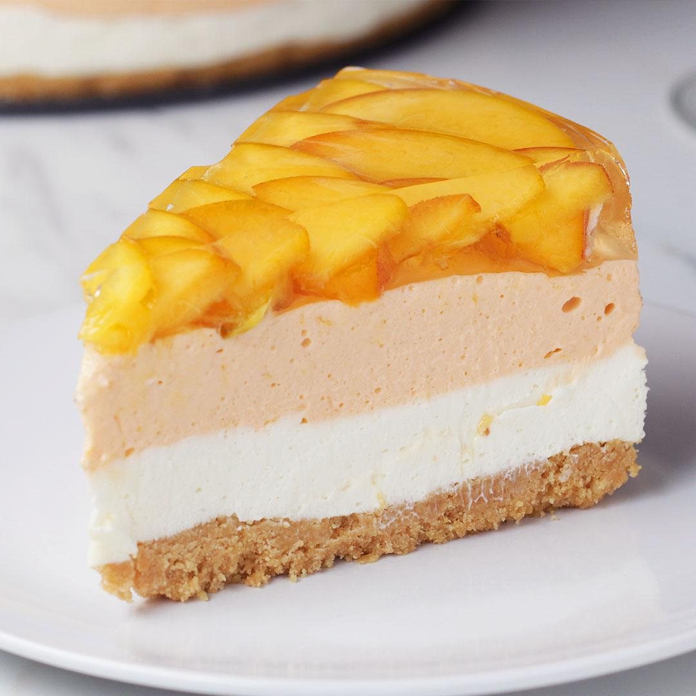

Peaches 'N' Cream Cheesecake

Delight friends and loved ones this summer with this beautiful Peaches ‘n’ Cream Cheesecake recipe. It may take a bit of time, but it’s relatively easy to prep and it is definitely worth the wow factor!
Ingredients for 12 servings
- nonstick cooking spray, for greasing
- 10 oz shortbread cookie
- 6 tablespoons unsalted butter, melted
- 2 ripe yellow peach, quartered, plus 4-5 thinly sliced
- 4 packs gelatin, divided
- 1 cup cold water, divided
- 32 oz cream cheese, softened
- 1¼ cup sugar, plus 2/3 cups (135 G), divided
- 1 teaspoon vanilla extract
- 1 teaspoon lemon juice
- ½ cup heavy cream
- 2 drops orange food coloring, optional
- ⅔ cup hot water
- 1 cup prosecco
Preparation
- Grease and line the sides of a 9-inch (20 cm) round springform pan with parchment paper.
- Add the shortbread cookies to a food processor. Pulse until finely crushed. Add the melted butter and pulse until combined.
- Transfer the cookie crumb mixture to the springform pan. Use a spatula or measuring cup to press the cookie crumbs down to form an even base. Freeze for 10 minutes.
- Add 2-3 quartered peaches (depending on size) to a food processor. Blend until smooth. Strain through a fine-mesh sieve.
- In a small bowl, combine ½ cup (120 ml) cold water and 2 packets of gelatin. Let the gelatin bloom for 5 minutes, until the water is mostly absorbed. Microwave for 20–30 seconds, or until the gelatin is melted.
- In a large bowl, beat the cream cheese, 1¼ cups (250 G) sugar, the vanilla, and lemon juice together with an electric hand mixer until combined.
- Add the heavy cream and melted gelatin and beat for another 2-3 minutes, until well combined and fluffy.
- Spread half the cheesecake mixture over the chilled cookie crust. Freeze for 10 minutes.
- Mix 1 cup (255 G) of the strained peach puree and orange food coloring, if desired, into the remaining cheesecake mixture. Carefully pour the mixture over the first layer of cheesecake. Spread evenly and freeze for another 10 minutes.
- In a small bowl, combine the remaining ½ cup (120 ML) cold water with the remaining 2 packages of gelatin. Let the gelatin bloom for 5 minutes, until the water is mostly absorbed. Microwave for 20–30 seconds, or until the gelatin is melted.
- Combine the gelatin mixture, hot water, and the remaining ⅔ cup (135 G) sugar and whisk to dissolve the sugar. Slowly pour into the prosecco and stir to combine. Let sit for 5 minutes to cool slightly. Skim off any foam that rises to the top. Set aside.
- Starting from the outside and working inward, arrange the sliced peaches over the peach cheesecake layer in a circular pattern with the curved sides facing out. Begin with the larger slices, overlapping slightly, and continue until the entire surface is filled.
- Spoon half of the prosecco gelatin over the peaches. Carefully transfer to the refrigerator and let set for 30 minutes. Pour the remaining prosecco gelatin over the peaches up to the rim of the pan. Chill in the refrigerator for at least 6 hours, or overnight.
- Release the springform and remove the parchment, then slice and serve.
- Enjoy!